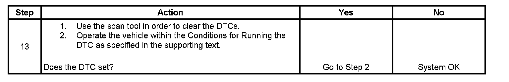

B0790
DTC B0790
Circuit Description
The Neutral indicator circuit consists of an ignition 3 voltage circuit and a Neutral indicator control circuit. When the Neutral mode has been selected by the driver, current is supplied to the Neutral indicator by the ignition 3 voltage circuit, traveling through the Neutral indicator LED at which time the transfer case shift control module supplies the ground through the Neutral indicator control circuit. This DTC detects an open, short to ground, or a short to voltage.
DTC Descriptor
This diagnostic procedure supports the following DTC:
DTC B0790 Transfer Case Neutral Indicator Circuit Malfunction
Conditions for Running the DTC
^ The ignition is ON.
^ The system voltage is 9-18 volts.
Conditions for Setting the DTC
^ The system monitors the voltage on the Neutral indicator control circuit.
^ If the system detects a voltage of 3 volts or less for 1.5 seconds when the Neutral indicator is not commanded, the DTC is logged.
^ If the system detects a voltage of 4.5 volts or more when the Neutral indicator is commanded, the DTC is logged.
Action Taken When the DTC Sets
The SERVICE 4WD indicator remains illuminated for the remainder of the current ignition cycle.
Conditions for Clearing the DTC
^ The transfer case shift control module will clear the DTC if the condition for setting the DTC is not currently present.
^ A history DTC will clear after 100 consecutive ignition cycles without a fault present.
^ History DTCs can be cleared using a scan tool.
Test Description
The numbers below refer to the step numbers on the diagnostic table.
2. This step inspects for the visual operation of the neutral indicator light. Command both the ON and OFF states.
3. This step tests for voltage at the Neutral indicator feed side of the transfer case select switch.
4. This step verifies that the transfer case shift control module is providing ground to the neutral indicator.
5. This step tests if ground is constantly being applied to the neutral indicator.
6. This step tests the control circuit of the Neutral indicator for a short to voltage or an open.
7. This step tests the control circuit of the neutral indicator for a short to ground.
Step 1 - Step 12:
Step 13:
